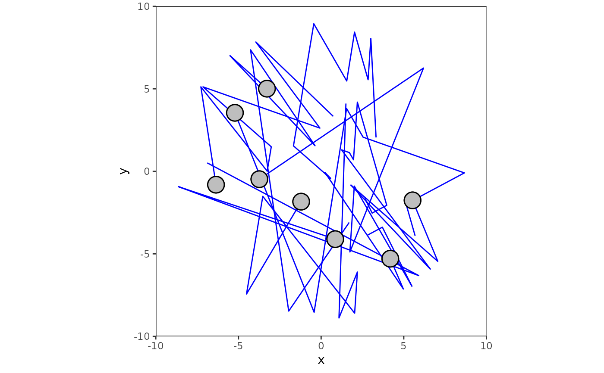
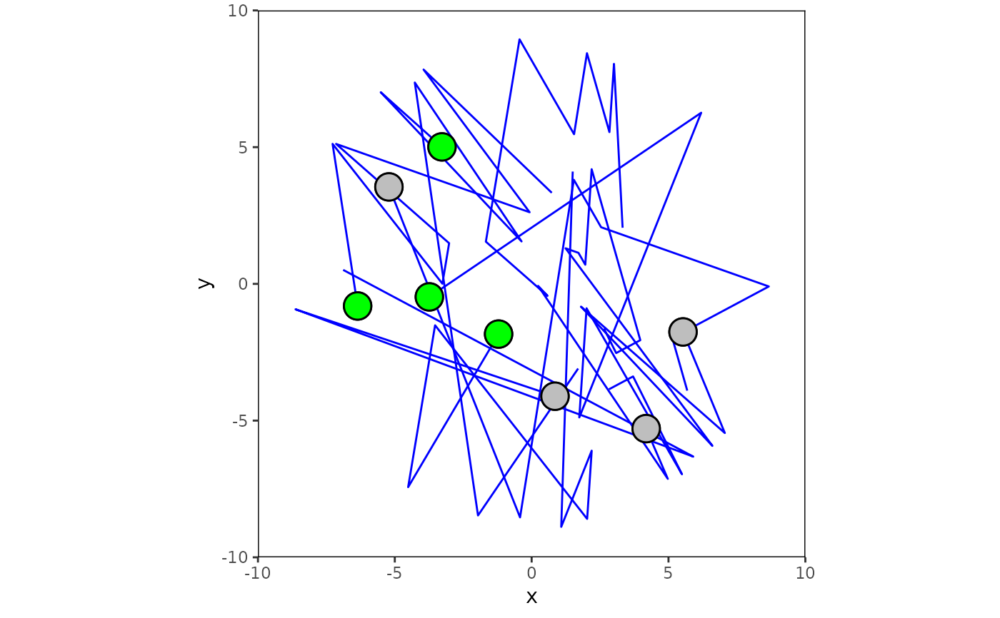

Plot object trajectories
plot_trajectory.RdThe function plots trajectory tibble based on x, y, time values and potentially extra values from settings. trajectory is expected to be trajectory tibble, but it may contain extra columns for graphics (same as plot_position): target (Logical vector indicating whether object is target or distractor), fill (Character vector with colour names of object interiors.), border (Character vector with colour names of object borders.).
Usage
plot_trajectory(trajectory, settings = default_settings(), targets = NULL, ...)Examples
plot_trajectory(trajectory8c, default_settings())

# first four objects are targets
plot_trajectory(trajectory8c, default_settings(), 1:4)
